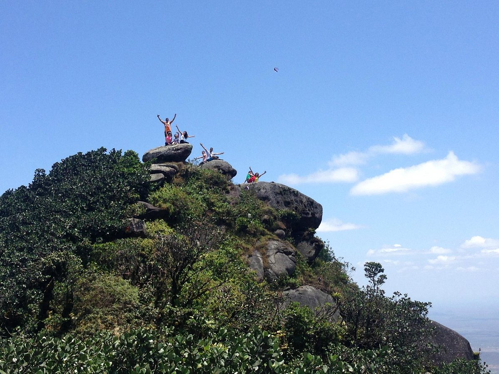
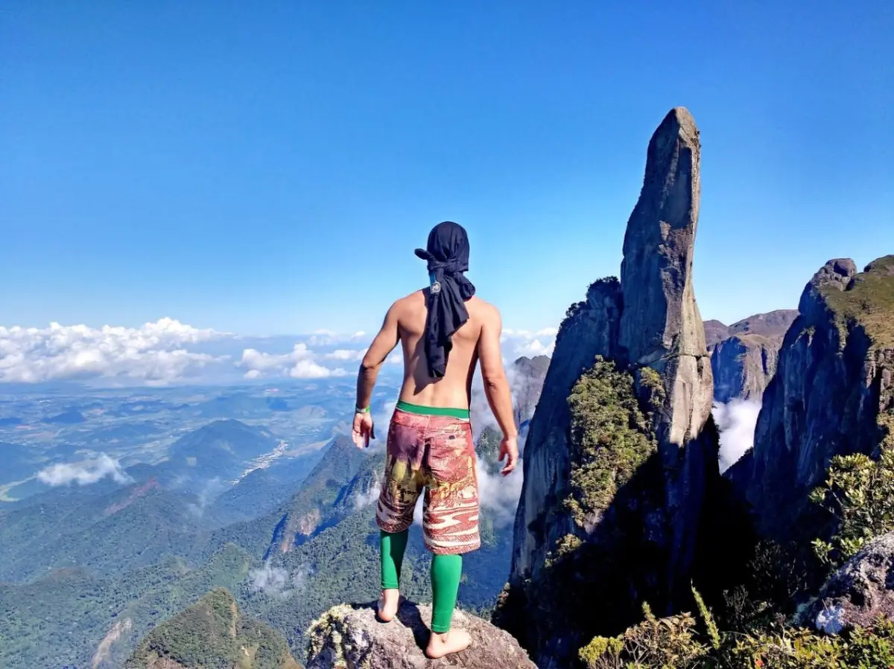

O trajeto mais recomendado consiste em primeiro ir em direção à Ducha, Lago Negro e Lago dos Espelhos, depois subir e ir andando por cima do paredão, contemplando seus mirantes e vendo as águas lá embaixo. Ao final do paredão, é possível descer pela Cachoeira dos Macacos, a mais famosa, e subir de novo, descendo pela Ponte de Pedra. Daí, é só subir de volta para o ponto de entrada margeando o rio, e parando para tomar banho em cada ponto.
Sábado e Domingo
02
Pedra da Rajada

Pedra Rajada é o ponto mais alto da serra de Maranguape, ficando a 920 metros de altitude. O nome se deu por conta das intensas rajadas de vento ocorridas no local. A trilha que leva á pedra é cheia de obstáculos de médio e alto graus. O percurso é cheio de paisagens lindas e de vários mirantes. A caminhada é longa e cansativa, mas chegar ao topo vale a pena todo o sacrifício: uma vista incrível de onde se pode contemplar, de um lado a cidade de Fortaleza e, de outro, a de Caucaia. Recomendado para amantes de esportes de aventura iniciados.
Sabado e Domingo
03
Trilha de Teresopolis

Montanha eleita uma das quinze mais espetaculares do planeta. Além de vislumbrar e acompanhar bem de perto escaladas na montanha mais imponente da Serra dos Órgãos, a Agulha, é possível ver de diferentes ângulos outros cumes ... De seu topo avista-se a Baixada Fluminense, a Baía de Guanabara, a Cidade de Niterói e a do Rio de Janeiro, além de outros picos do próprio parque, como: Dedo de Deus, Dedo de Nossa Senhora, Escalavrado, etc. Caso a visibilidade esteja boa, também é possível avistar o Pão de Açúcar, a Pedra da Gávea e o morro do Corcovado, na cidade do Rio de Janeiro. No caminho você se depara com a famosa cachoeira do Véu da Noiva e passando por uma das trilhas mais interessantes da região, cortada pela nascente do rio Paquequer./td>